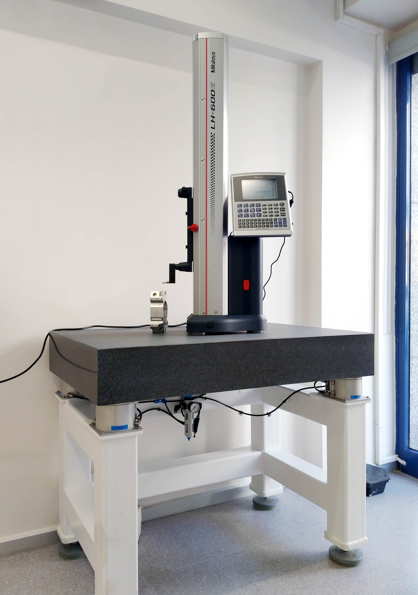

Bilginoğlu: stoły laboratoryjne do optymalnej izolacji drgań
Firma w Stambule, w ruchliwej dzielnicy z dużym natężeniem ruchu — idealne warunki na showroom wysokiej klasy metrologii. Te urządzenia muszą bowiem dawać precyzyjne wyniki także w niekorzystnych warunkach przemysłowych. Firma Bilginoğlu powstała w 1973 roku, a od 2019 należy do sieci dystrybucyjnej Bilz.

W showroomie firma prezentuje rozwiązania Bilz do odsprzężenia drganiowego maszyn pomiarowych i małych przyrządów. Przy drganiach od przejeżdżających samochodów i ciężarówek szczególnie dobrze widać dokładność pomiarową tych maszyn. Drgania podłoża są częstym, dużym problemem dla pomiarów blisko produkcji i powtarzalności wyników.
Zastosowano stoły laboratoryjne Bilz z systemami wibroizolatorów pneumatycznych BiAir® jako wibroizolowane stanowiska pracy. Zapewnia to ochronę przyrządów przed drganiami otoczenia i stałą, bezbłędną kontrolę jakości. Stoły dostępne są z płytą z twardego kamienia (typ LTH) lub z blatem optycznym (typ LTO). Mechaniczno-pneumatyczna regulacja poziomu utrzymuje poziom także przy zmianach obciążenia.
Skontaktuj się z nami — przeanalizujemy Twoją aplikację i dobierzemy optymalne rozwiązanie antywibracyjne.
→ Skontaktuj sięW showroomie Bilginoğlu w ruchliwej dzielnicy Stambułu zastosowano stoły laboratoryjne Bilz z systemami wibroizolatorów pneumatycznych antywibracyjnych BiAir, dostępne z płytą z twardego kamienia (LTH) lub blatem optycznym (LTO). Mechaniczno-pneumatyczna regulacja poziomu utrzymuje poziom także przy zmianach obciążenia, chroniąc przyrządy przed drganiami od ruchu ulicznego. Oficjalnym przedstawicielem Bilz w Polsce jest firma EKKON z Olsztyna.